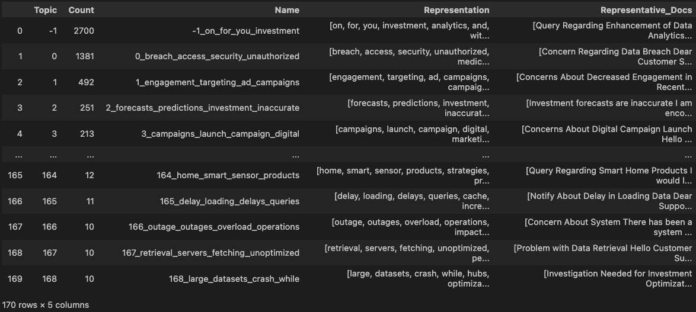
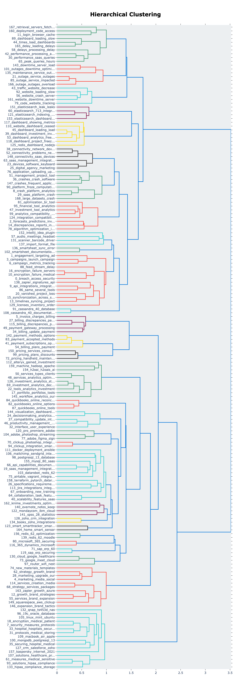
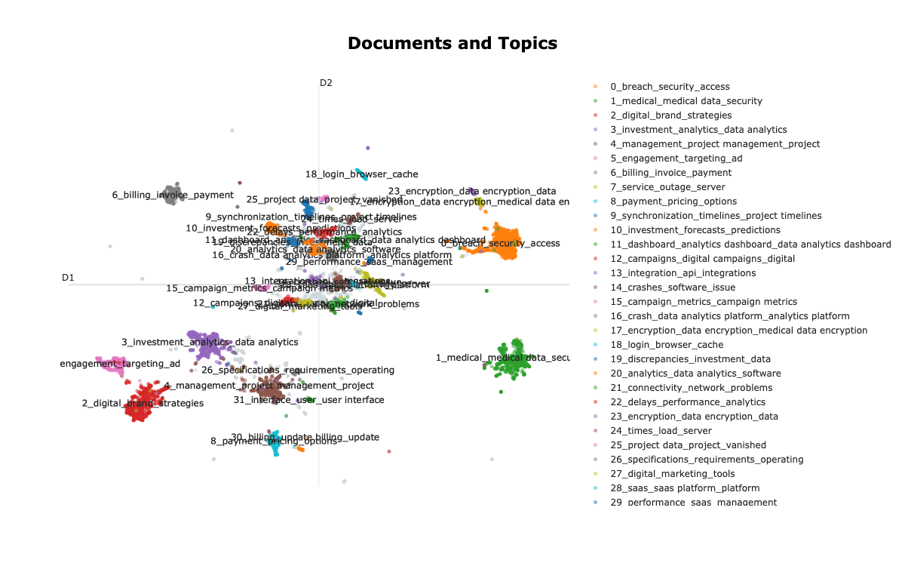
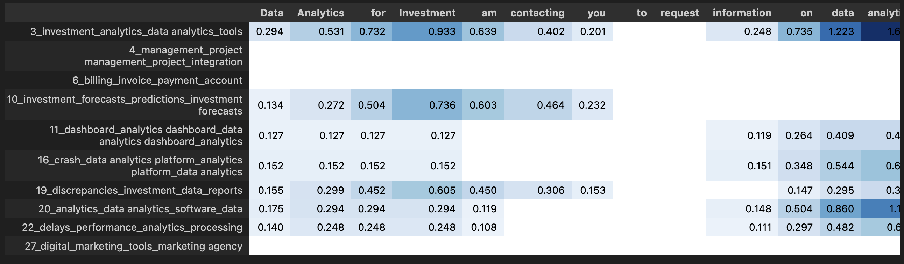
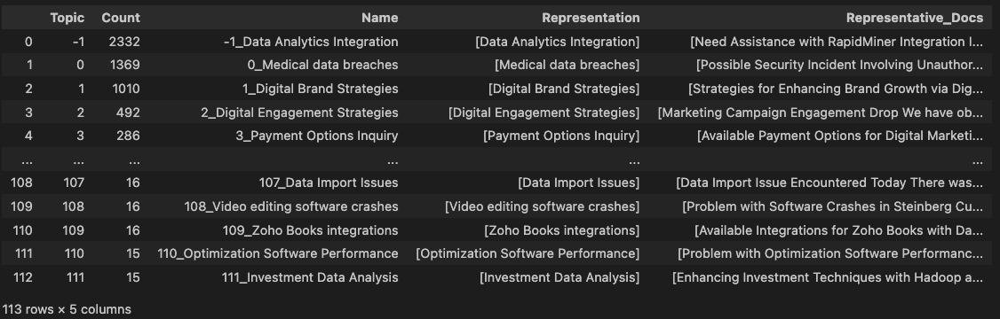

In an era characterized by multi-terabyte datasets and parameter-dense large language models, extracting meaningful insights from massive text corpora presents a formidable challenge for data scientists. While traditional probabilistic approaches such as Latent Dirichlet Allocation (LDA) have provided foundational capabilities, they exhibit inherent limitations in capturing the contextual semantics and hierarchical relationships within natural language. This article demonstrates how transformer-based topic modeling frameworks—specifically BERTopic with its contextualized embeddings and clustering mechanisms—can significantly enhance the results. My hope is to give data scientists practical guidelines and insights that seamlessly integrate with their existing topic modeling workflows. What’s the real magic? Transforming mountains of unstructured text into actionable business intelligence without getting bogged down in technical complexities.
Introduction: The Text Analysis Challenge
Organizations today are drowning in text data. From customer feedback and support tickets to social media posts and internal documents, the sheer volume of unstructured text is overwhelming. How can we efficiently extract meaningful insights from thousands or millions of documents?
Topic modeling offers a powerful solution—automatically organizing large text collections into coherent thematic clusters without requiring manual labeling. Rather than reading through endless documents, topic modeling algorithms quickly identify key subjects being discussed across your dataset.
This article will compare two topic modeling approaches for analyzing customer support data: BERTopic by Maarten Grootendorst (2022) and the more traditional methods. BERTopic leverages BERT’s contextual embeddings to transform how we understand complex text relationships in multilingual environments. Using a real-world dataset, we’ll explore in Python code:
- how to create a LDA based topic model using gensim
- how to create a basic topic model using BERTopic
- how to improve/fine-tune the base topic model
- how to evaluate topic model using coherence score and PUW score
- how to visualize document clusters using BERTopic capabilities
- how to develop better topic representations using LLMs
Why Topic Modeling Matters
Before diving into implementation, let’s understand why topic modeling is so valuable in the current AI landscape:
Extracting labels for supervised tasks: Most NLP projects in real-world scenarios are supervised classification tasks on unlabeled data. Topic modeling helps identify natural categories in unlabeled text data. These discovered topics can help develop labels for supervised classification tasks, saving time on manual annotation and providing a structured starting point for more complex analysis.
Guiding preprocessing decisions: As an exploratory tool, topic modeling reveals patterns in your data that can inform critical preprocessing choices. It helps identify important terms, unnecessary stop words, and potential biases in your dataset. Incorporating this information can significantly improve your preprocessing leading to better downstream model performance.
Uncovering temporal patterns: Topic modeling shows how themes in your data change over time. This reveals when new topics emerge, how existing topics evolve, and when topics fade away. This temporal view helps detect data drift and changing patterns. This can be very important if you have trained models on the earlier version of the dataset and want to preserve model performance.
Auditing pre-training data for LLMs: Nowadays, every company wants to train a foundation model. For LLMs, the quality of the dataset directly determines model quality. Some experts argue that data quality, not architectural differences, primarily distinguishes competing models. Topic modeling provides essential insights into what content your LLM will learn from, helping identify gaps, biases, or problematic content before training begins.
Getting Started with the Dataset
For this demonstration, I’m using the Customer IT Support - Ticket Dataset from Kaggle, created by Tobias Bueck available under Attribution 4.0 International (CC BY 4.0). This comprehensive dataset contains approximately 20,000 IT support tickets across multiple languages, providing an excellent foundation for our topic modeling exploration.
For simplicity, I’ll focus analysis on English-language tickets, giving us a subset of approximately 10,000 support tickets to work with.
import pandas as pd
import gensim
from gensim import corpora
import spacy
from bertopic import BERTopic
# Load the dataset
PATH= "data/Customer IT Support Ticket Dataset/dataset-tickets-multi-lang-4-20k.csv"
df = pd.read_csv(PATH)
# Filter for English language rows
english_df = df[df['language'] == 'en']
# Prepare the text data by concatenating subject and body
english_df['subject'] = english_df['subject'].fillna('')
english_df['body'] = english_df['body'].fillna('')
english_df['text'] = english_df['subject'] + ' ' + english_df['body']Let’s understand what this code gives us: A preprocessed dataset of English IT support tickets, ready for topic modeling analysis.
Traditional Approach: LDA Topic Modeling
First, we will explore the traditional approach to topic modeling using Latent Dirichlet Allocation (LDA). This method has been the workhorse of topic modeling for years, so it provides a good baseline for comparison.
To begin, we need to preprocess our text data with lemmatization and stop word removal:
# Load spaCy model for lemmatization
nlp = spacy.load('en_core_web_sm', disable=['parser', 'ner'])
# data preprocessing using spacy
def preprocess(texts):
"""
Tokenize and lemmatize text, removing stopwords
"""
processed = []
for doc in nlp.pipe(texts):
tokens = [
token.lemma_.lower()
for token in doc
if not token.is_stop
and token.is_alpha
and len(token) > 2
]
processed.append(tokens)
return processed
# Preprocess the text
texts = preprocess(list(english_df['text'].values))
# Create dictionary and corpus
dictionary = corpora.Dictionary(texts)
corpus = [dictionary.doc2bow(text) for text in texts]
# Build LDA model
lda_model = gensim.models.LdaModel(
corpus=corpus,
id2word=dictionary,
num_topics=10,
random_state=100,
passes=15,
alpha='auto'
)
# Add topics to original dataframe
def get_dominant_topic(bow):
topics = lda_model.get_document_topics(bow)
return max(topics, key=lambda x: x[1])[0] if topics else -1
english_df['dominant_topic'] = [get_dominant_topic(doc) for doc in corpus]
# Display results
print("Topics:")
for idx, topic in lda_model.print_topics(-1):
print(f"Topic {idx}: {topic}")After examining the output, we found LDA identified 10 key topics, including:
- Medical security data protection
- Customer support and software issues
- Business intelligence, analytics and dashboards
- Digital brand strategy and marketing campaign
- Billing, subscriptions, and payments
- SaaS integration
While these findings aligned with the tags in the dataset, the LDA approach revealed several critical limitations that impact its effectiveness for modern text analysis:
Topic Redundancy and Overlap: Many discovered topics shared similar terms and themes, making it difficult to clearly distinguish between distinct subject areas. This redundancy reduces the model’s usefulness for content organization and insight generation.
Manual Topic Specification: Having to pre-specify the number of topics (k=10) requires domain expertise and multiple iterations to find the optimal number. This manual process is time-consuming and may not reflect the natural topic structure in the data.
Loss of Semantic Context: The bag-of-words approach treats each word independently, losing crucial word order and contextual relationships. For example, “data security” and “security data” would be treated identically, despite potentially different meanings.
Limited Semantic Coherence: Since LDA relies purely on word co-occurrence statistics, it often groups words that frequently appear together but may not be semantically related. This can lead to topics that are statistically valid but not interpretable from a business perspective.
Word Redundancy: The model tends to reuse the same high-frequency words across multiple topics, resulting in less distinctive topic representations and lower information value per topic.
Let’s explore how BERTopic can transform our topic modeling results while addressing each of these limitations.
Upgrading to BERTopic: Modern Topic Modeling with Transformers
Enter BERTopic - a modern approach that leverages transformer-based models to address these exact challenges. By utilizing BERT’s contextual embeddings and advanced clustering techniques, BERTopic offers several key improvements:
- Automatic topic number detection
- Semantic understanding of word relationships
- Context-aware topic generation
- Reduced redundancy through better term differentiation
- More coherent and interpretable topics
Learn exactly how BERTopic works here.
Ok! Let’s fit a basic model using the libraries default capabilities.
# Initialize and train BERTopic model
topic_model = BERTopic()
topics, probs = topic_model.fit_transform(english_df['text'].values)
# Explore the topics found
explore_topics = topic_model.get_topic_info()
print(explore_topics)
The results are impressive! BERTopic automatically discovered 170 distinct topics, with much richer semantic coherence. The largest topics included:
- Security and Data Protection: Focused on security concerns, unauthorized access, and data breaches (1,381 documents)
- Marketing and Engagement: Multiple topics related to digital marketing, ad campaigns, and user engagement metrics
- Technical Performance Issues: Topics dealing with system performance, loading delays, outages, and crash problems
- Billing and Payments: Topics covering billing issues, invoice processing, and payment concerns
- System Integration Challenges: Topics highlighting technical challenges around system integrations and platform connectivity.
BERTopic’s initial results are impressive but we notice many micro-topics could be consolidated. To better understand the relationships between topics and identify potential merging opportunities, we can visualize the hierarchical structure using BERTopic’s built-in visualize_hierarchy() method. This generates a dendrogram showing how topics cluster together based on semantic similarity, making it easier to identify groups of related topics that could potentially be combined into broader, more meaningful categories.

Refining the Topic Model
The base model using default parameters is a very good place to start. But, we can optimize it further in two key ways:
Controlling Topic Granularity with HDBSCAN: The default model produced 170 topics, with many showing significant overlap in themes and terminology. HDBSCAN, which handles the clustering step after BERT generates document embeddings, determines how documents are grouped into topics. By increasing HDBSCAN’s
min_cluster_sizeparameter (e.g., from default to 50), we can force the algorithm to create larger, more inclusive clusters. This reduces redundancy by combining similar micro-topics into broader themes - for instance, merging separate topics about “password reset”, “login issues”, and “authentication problems” into a single comprehensive “authentication and access” topic.Enhancing Topic Quality with N-grams: After clustering, BERTopic uses CountVectorizer to extract the most representative terms for each topic. The default CountVectorizer uses single words (unigrams) which can miss important multi-word concepts. By configuring CountVectorizer with
ngram_range=(1,3)and adjustingmin_df, we can capture meaningful phrases up to three words long. This means instead of seeing disconnected terms like “data”, “security”, and “breach”, we’ll get more contextual phrases like “data security breach”. These multi-word expressions provide richer, more interpretable topic representations that better reflect the actual content. CountVectorizer essentially acts as the final layer that transforms our clusters into human-readable topic descriptions.
from hdbscan import HDBSCAN
# Configure HDBSCAN with a larger minimum cluster size
hdbscan_model = HDBSCAN(min_cluster_size=50,
metric='euclidean',
cluster_selection_method='eom',
prediction_data=True)
# Create BERTopic model with custom HDBSCAN settings
topic_model = BERTopic(hdbscan_model=hdbscan_model)
topics, probs = topic_model.fit_transform(english_df['text'].values)This adjustment reduced our topic count from 170 to a more manageable 36, while maintaining distinct and coherent topics.
We can further improve topic representation by controlling the CountVectorizer parameters:
from sklearn.feature_extraction.text import CountVectorizer
# Configure CountVectorizer to improve topic representation
vectorizer_model = CountVectorizer(stop_words="english", min_df=2, ngram_range=(1,3))
# Create a refined BERTopic model
topic_model = BERTopic(vectorizer_model=vectorizer_model,hdbscan_model=hdbscan_model)
topics, probs = topic_model.fit_transform(english_df['text'].values)The refined model provided more descriptive topic representations with multi-word phrases, making the topics even more interpretable.
Model Evaluation
Quantitative evaluation of topic models is crucial because topic modeling can be highly subjective and interpretations may vary between different analysts. Having concrete metrics helps establish objective benchmarks for model quality and enables meaningful comparisons between different modeling approaches. We will evaluate our topic model using two key quantitative metrics:
Coherence Score: This metric measures how semantically similar the words within each topic are to each other. A higher coherence score indicates that the words in each topic are more likely to appear together in meaningful ways. Our model achieved a coherence score of 0.77 (on a scale of 0-1, the higher the better), indicating strong semantic coherence within topics and suggesting that our topics are capturing meaningful thematic relationships.
Percentage of Unique Words (PUW): This metric assesses how distinct topics are from each other by measuring word overlap between topics. A higher PUW score means topics contain more unique words and are therefore more distinct. Our model achieved a PUW score of 60.57%, demonstrating good topic separation and minimal redundancy between topics.
Let’s calculate these metrics for our refined model:
from gensim.models.coherencemodel import CoherenceModel
# Assuming you have already trained your BERTopic model
# topic_model = BERTopic(n_gram_range=(1, 3))
# topics, _ = topic_model.fit_transform(docs)
# Step 1: Preprocess documents
cleaned_docs = topic_model._preprocess_text(english_df['text'].values)
# Step 2: Extract vectorizer and analyzer from BERTopic
vectorizer = topic_model.vectorizer_model
analyzer = vectorizer.build_analyzer()
# Step 3: Generate tokens
tokens = [analyzer(doc) for doc in cleaned_docs]
# Step 4: Create dictionary and corpus
dictionary = corpora.Dictionary(tokens)
corpus = [dictionary.doc2bow(token) for token in tokens]
# Step 5: Extract topic words
topics_dict = topic_model.get_topics()
topics_dict.pop(-1, None) # Remove outlier topic (-1)
topic_words = [[words for words, _ in topic_model.get_topic(topic)]
for topic in range(len(set(topics))-1)]
# Step 6: Calculate coherence
coherence_model = CoherenceModel(
topics=topic_words,
texts=tokens,
corpus=corpus,
dictionary=dictionary,
coherence='c_v' # You can also use 'u_mass', 'c_uci', 'c_npmi'
)
coherence_score = coherence_model.get_coherence()
print(f"Coherence Score: {coherence_score}")Next, let’s calculate the PUW score.
def calculate_puw_score(topic_model):
"""
Calculate the Percentage of Unique Words (PUW) score for a BERTopic model.
Parameters:
-----------
topic_model : BERTopic model
The trained BERTopic model
Returns:
--------
float
The PUW score (percentage of unique words across all topics)
"""
# Get all topics except the outlier topic (-1)
topics_dict = topic_model.get_topics()
if -1 in topics_dict:
topics_dict.pop(-1)
# Extract words from each topic (typically top N words)
all_words = []
for topic_id, topic_info in topics_dict.items():
# Each topic_info is a list of (word, score) tuples
words = [word for word, _ in topic_info]
all_words.extend(words)
# Calculate the number of unique words
unique_words = set(all_words)
# Calculate the percentage of unique words
if len(all_words) == 0:
return 0.0
puw_score = (len(unique_words) / len(all_words)) * 100
return puw_score
# Calculate PUW score
puw_score = calculate_puw_score(topic_model)
print(f"Percentage of Unique Words (PUW) Score: {puw_score:.2f}%")Visualization and Insights
BERTopic offers robust visualization capabilities that help us understand and interpret the discovered topics. In this section, we’ll explore two powerful visualization methods that provide different perspectives on our topic model results:
visualize_documents(): This powerful visualization method creates an interactive 2D or 3D plot where each point represents a document, colored by its assigned topic. The spatial relationships between points reflect semantic similarity - documents discussing similar themes appear closer together. This visualization is invaluable for:- Identifying natural document clusters and topic boundaries
- Spotting outliers or misclassified documents
- Understanding topic overlap and relationships
- Validating the coherence of discovered topics visually
from sentence_transformers import SentenceTransformer
from bertopic import BERTopic
from umap import UMAP
# Prepare embeddings
sentence_model = SentenceTransformer("all-MiniLM-L6-v2")
embeddings = sentence_model.encode(english_df['text'].values, show_progress_bar=False)
# Train BERTopic
topic_model = BERTopic(vectorizer_model=vectorizer_model,
hdbscan_model=hdbscan_model).fit(english_df['text'].values,
embeddings)
# Run the visualization with the original embeddings
topic_model.visualize_documents(english_df['text'].values, embeddings=embeddings)
visualize_approximate_distribution(): This visualization method provides a detailed view of how topics are distributed within individual documents. It creates an interactive bar chart showing:- Token-level topic assignments, revealing which parts of the text contribute to each topic
- Color-coded segments that help identify dominant themes and topic transitions
- Detecting subtle thematic shifts within documents
# Calculate the topic distributions on a token-level
topic_distr, topic_token_distr = topic_model.approximate_distribution(
english_df['text'].values, calculate_tokens=True)
# Visualize the token-level distributions
df = topic_model.visualize_approximate_distribution(english_df['text'].values[1],
topic_token_distr[1])
Fine-tuning topics using LLMs:
Ok, everything is all set and done! We have a good topic model, but it’s still challenging to understand what each topic truly represents. Lucky for us, BERTopic has an amazing functionality that allows us to fine-tune topics using LLMs like GPT-3.5, transforming cryptic word clusters into clear, meaningful topic descriptions. Here’s how it works:
- BERTopic extracts key terms and sample documents from each topic
- These representative samples are sent to an LLM
- The LLM generates human-readable topic labels and descriptions
This approach is highly efficient since you only need to process a small subset of documents with the LLM, not your entire dataset. This saves time and reduces API costs significantly.
The real power lies in customization - you can craft specific prompts to generate exactly what you need:
- Concise topic labels
- Detailed summaries
- Creative descriptions
- Domain-specific interpretations
This combines the statistical strength of BERTopic with the linguistic capabilities of LLMs for superior topic modeling results.
import openai
import tiktoken
from bertopic.representation import OpenAI
# Tokenizer
tokenizer= tiktoken.encoding_for_model("gpt-3.5-turbo")
# Initialize vectorizer model
vectorizer_model = CountVectorizer(stop_words="english", min_df=2, ngram_range=(1, 2))
# Initialize HDBSCAN model
hdbscan_model = HDBSCAN(min_cluster_size=50, metric='euclidean',
cluster_selection_method='eom', prediction_data=True)
# Create your representation model
client = openai.OpenAI(api_key= "sk-proj-...")
representation_model = OpenAI(
client,
model="gpt-3.5-turbo",
delay_in_seconds=2,
chat=True,
nr_docs=4,
doc_length=100,
tokenizer=tokenizer
)
# Use the representation model in BERTopic on top of the default pipeline
topic_model = BERTopic(representation_model=representation_model,
vectorizer_model=vectorizer_model,
hdbscan_model=hdbscan_model)
Conclusion:
Beyond the technical details, BERTopic represents a significant leap forward in how we make sense of text data. By combining the language understanding capabilities of large language models with efficient topic modeling, organizations can now extract meaningful insights from vast collections of documents without drowning in complexity. Imagine a healthcare provider quickly identifying emerging patient concerns from thousands of feedback forms, or a media company tracking how public discourse around climate change has evolved over the past decade. These practical applications translate directly to better decision-making and more responsive organizations.
Whether or not LLMs eventually lead to AGI, they’ve already gifted us with powerful tools to analyze massive text collections and drive scalable decisions. As data increasingly permeates all software, topic modeling techniques like BERTopic become crucial for uncovering hidden patterns, biases, and insights within our data. This shift encourages more data-driven approaches rather than simply pursuing more complex models—ultimately leading to more robust, transparent systems that can truly help organizations transform overwhelming amounts of unstructured text into clear, strategic insights.
Next Steps:
To further enhance this topic modeling approach, consider:
- Exploring temporal topic evolution over time.
- Adding guided topic modeling to incorporate domain knowledge.
- Integrating with downstream classification tasks.
- Applying to multilingual analysis (BERTopic supports multiple languages).
References:
[1] M. Grootendorst, BERTopic: Neural topic modeling with a class-based TF-IDF procedure (2022), arXiv:2203.05794. https://arxiv.org/pdf/2203.05794
[2] D. M. Blei, A. Y. Ng, and M. I. Jordan, Latent dirichlet allocation (2003), Journal of machine Learning research, 3(Jan), 993-1022. https://www.jmlr.org/papers/volume3/blei03a/blei03a.pdf
[3] J. Devlin, M. W. Chang, K. Lee, and K. Toutanova, BERT: Pre-training of deep bidirectional transformers for language understanding (2018), arXiv:1810.04805. https://arxiv.org/abs/1810.04805
[4] L. McInnes, J. Healy, and S. Astels, hdbscan: Hierarchical density based clustering (2017), Journal of Open Source Software, 2(11), 205. https://joss.theoj.org/papers/10.21105/joss.00205
[5] R. J. Campello, D. Moulavi, and J. Sander, Density-based clustering based on hierarchical density estimates (2013), Pacific-Asia Conference on Knowledge Discovery and Data Mining, 160-172. https://link.springer.com/chapter/10.1007/978-3-642-37456-2_14
[6] T. Bueck, Customer IT Support - Ticket Dataset (2023), Kaggle. https://www.kaggle.com/datasets/tobiasbueck/multilingual-customer-support-tickets
[7] M. Röder, A. Both, and A. Hinneburg, Exploring the space of topic coherence measures (2015), Proceedings of the Eighth ACM International Conference on Web Search and Data Mining, 399-408. https://dl.acm.org/doi/10.1145/2684822.2685324
[8] S. Kapadia, Understanding Topic Coherence Measures (2019), Towards Data Science. https://towardsdatascience.com/understanding-topic-coherence-measures-4aa41339634c/
[9] S. Kapadia, Choose the Right One: Evaluating Topic Models for Business Intelligence (2022), Towards Data Science. https://towardsdatascience.com/choose-the-right-one-evaluating-topic-models-for-business-intelligence/
[10] R. Řehůřek, Gensim Tutorial Examples. Gensim: Topic Modelling for Humans (2023). https://radimrehurek.com/gensim/auto_examples/index.html